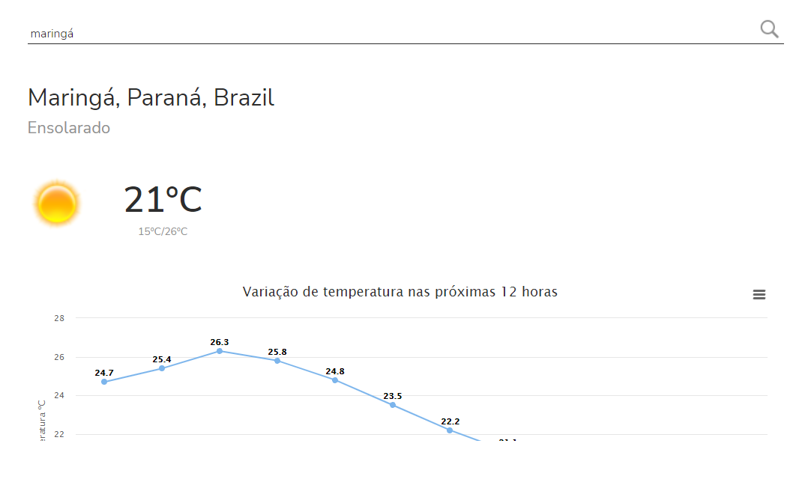
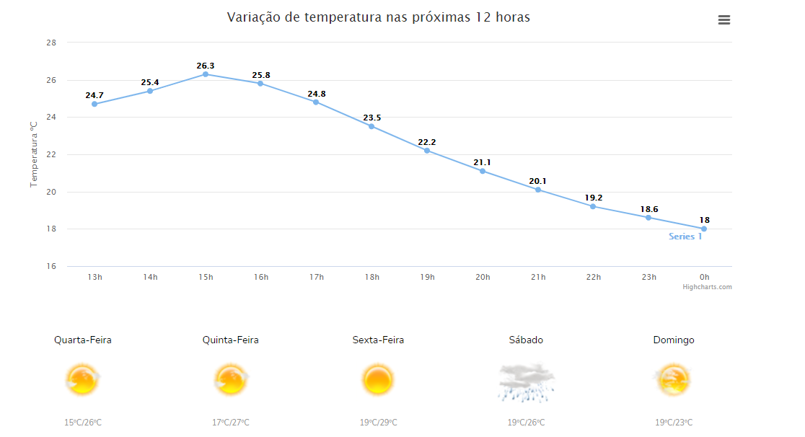

Site de previsão do tempo
Link do github deste projeto: https://github.com/BrunoStel/Site-de-tempo

Descrição do projeto
Projeto realizado utilizando jQuery e AJAX. As funcionalidades deste projeto incluem: obter a previsão do tempo atual, das próximas 12 horas (hora a hora, plotado utilizando HighCharts), e a previsão dos proximos 5 dias. O usuário consegue essas informações utilizando somente o nome da cidade(para obter maior precisão, utilizar nome da cidade + estado). As APIs utilizadas para construir este sistema foram:
*Não é API Este projeto possui fins unicamente didáticos.
← Voltar ao portfolio